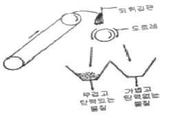
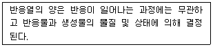
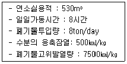
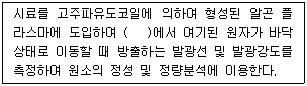
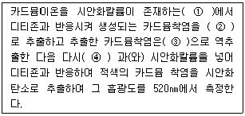
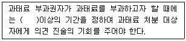
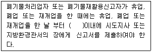

폐기물처리기사 (2005-05-29 기출문제)
1과목: 폐기물 개론
1. 국내 쓰레기수거차량 중 압축식(TOWN PACK)에 대한 설명으로 가장 거리가 먼 것은?
- 대형쓰레기도 파쇄압축하므로 압착식보다 압착량이 크다.
- 몸체가 밀폐식으로 위생적이며 오수통이 장착된다.
- 용적효율이 양호하며 기계식 상차시설이 필요 없다.
- 연탄재 등이 혼합되면 압축효과가 저하된다.
(정답률: 알수없음)

2. 설정된 기준 색과 다른색의 혼합물을 낙하시켜 물질의 색의 차를 이용하여 혼합물을 분리시키는 방법은?
- 중력분리(重力分離)
- 자력선별(磁力選別)
- 정전분리(靜電分離)
- 광학분리(光學分離)
(정답률: 알수없음)
3. 다음 그림이 나타내는 선별방법은?

- Stoners
- Jigs
- Secators
- Table
(정답률: 알수없음)
4. 폐기물수집 운반을 위한 노선 설정시 유의할 사항으로 가장 거리가 먼 것은?
- 될 수 있는 한 한번 간 길은 가지 않는다.
- 가능한 한 언덕길은 올라가면서 수거한다.
- U자형 회전을 피해 수거한다.
- 가능한 한 시계방향으로 수거노선을 정한다.
(정답률: 알수없음)
5. 쓰레기를 수거 후에 밀도를 재어보니 650kg/m3이고 함수율은 80%이었다. 부피를 줄이려고 압축했더니 밀도가 1000kg/m3이 되었다. 이 때의 함수율은? (단, 초기의 쓰레기량은 1m3 로 가정하고, 압축과정 중 수분 손실은 없다.)
- 35%
- 52%
- 80%
- 85%
(정답률: 알수없음)
6. 도시쓰레기와 관련된 지표로서 CEI(Community Effect Index)는 무엇을 평가하기 위한 지표인가?
- 한 구역의 쓰레기 발생량
- 한 구역의 가로(街路)청소상태
- 쓰레기 수거효율
- 쓰레기 적환장 위치 적합성
(정답률: 알수없음)
7. 산소가 있는 고압하의 수중에서 유기물질을 산화시키는 폐기물 열분해기법이며 유기산이 회수된다. 이를 무엇이라고 하는가?
- Hydrogasification
- Hydrogenation
- Wet Oxidation
- Air Stripping
(정답률: 알수없음)
8. 다음 중 폐산류에 대한 회수 방법이 아닌 것은?
- 진공증류법
- 황산치환법
- 가염소다법
- 확산투석법
(정답률: 알수없음)
9. 고형폐기물을 파쇄처리하므로써 기대할 수 있는 효과가 아닌 것은?
- 용적감소
- 겉보기 비중의 증가
- 부식효과 억제
- 입경의 고른 분포
(정답률: 알수없음)
10. 폐기물 파쇄기에 대한 설명으로 옳지 않은 것은?
- 파쇄기의 작용력은 충격, 압축, 전단으로 분류한다.
- 파쇄의 목적은 감용과 질의 균등화이다.
- 취성도가 적은 물질의 파쇄방법은 전단파쇄가 유효하다.
- 취성도가 큰 물질의 파쇄방법은 전단파쇄가 유효하다.
(정답률: 알수없음)
11. 국내에서 발생되는 사업장폐기물의 특성에 대한 설명으로 옳지 않은 것은?
- 사업장폐기물 중 가장 높은 증가율을 보이는 것은 폐유이다.
- 사업장폐기물의 대부분은 일반사업장폐기물이다.
- 일반사업장폐기물 중 무기물류가 가장 많은 비중을 차지하고 있다.
- 지정폐기물 중 그 배출량이 가장 많은 것은 폐산·폐알칼리이다.
(정답률: 알수없음)
12. 퇴비화 하기 위해 함수율 97%인 분뇨와 함수율 30%인 쓰레기를 무게비 1:3으로 혼합했을 때의 함수율은? (단, 분뇨와 쓰레기의 비중은 같다고 가정함)
- 36%
- 39%
- 47%
- 52%
(정답률: 알수없음)
13. 쓰레기 소각 중에 발생하는 다이옥신에 대한 설명으로 옳지 않은 것은?
- 쓰레기 중에 존재하는 다이옥신이 그대로 발생하는 경우가 있다.
- 연소중에 생성되는 유기물질과 염소화합물이 반응하여 생성된다.
- 소각로가 불완전연소 영역에서 운전될 때 발생된다.
- 80℃이하로 냉각된 배기가스가 촉매장치내에서 반응하여 발생된다.
(정답률: 알수없음)
14. 저발열량이 10000㎉/㎏, 이론공기량이 11Nm3/kg, 이론연소 가스량이 11.5Nm3/kg의 중유를 공기비 1.2로 완전 연소할 때 이론가스의 온도(℃)는? (단, 공기 및 중유의 온도는 20℃, 연소가스의 비열은 0.4kcal/Nm3·℃)
- 1432
- 1713
- 1845
- 1743
(정답률: 알수없음)
15. 인구 100,000인 어느 도시의 1인 1일 쓰레기 배출량이 1.8kg이다. 쓰레기 밀도가 0.5ton/m3이라면 적재량 15m3의 트럭이 처리장으로 한달동안 운반해야 할 회수는? (단, 한달은 30일으로 하며, 트럭은 1대 기준이다)
- 640회
- 720회
- 810회
- 940회
(정답률: 알수없음)
16. 3,000,000ton/year의 폐기물수거에 4500명의 인부가 종사한다면 MHT는? (단, 수거인부의 1일 작업 시간은 8시간, 1년 작업 일수 300일 )
- 1.2man·h/ton
- 2.4man·h/ton
- 3.6man·h/ton
- 4.8man·h/ton
(정답률: 알수없음)
17. 어느 폐기물의 성분을 조사한 결과 플라스틱의 함량이 20%(중량비)로 나타났다. 이 폐기물의 밀도가 300㎏/m3이라면 5m3중에 함유된 플라스틱의 양은?
- 200㎏
- 300㎏
- 400㎏
- 500㎏
(정답률: 알수없음)
18. 외국의 쓰레기 수거형태 중 정해진 수거일에 맞추어 주인이 용기를 정해진 장소에 가져다 놓아야 되는 형태는?
- Alley
- Setout
- Curb
- Backyard Carriage
(정답률: 알수없음)
19. 함수율이 60%인 쓰레기를 건조시켜서 함수율이 30%인 쓰레기로 만들면 쓰레기의 100ton당 약 얼마의 수분을 증발시켜야 하는가?
- 57ton
- 50ton
- 43ton
- 35ton
(정답률: 알수없음)
20. 적환장에 대한 설명으로 가장 거리가 먼 것은?
- 적환장의 위치는 주민들의 생활환경을 고려하여 수거 지역의 무게중심과 되도록 멀리 설치하여야 한다.
- 최종처분지와 수거지역의 거리가 먼 경우 적환장을 설치한다.
- 종말처리장이 대형화 함으로서 폐기물의 운반거리가 연장되어 적환이 실시된다.
- 적환장은 직접부림, 저장부림, 직접 및 저장복합부림 적환장으로 구분한다.
(정답률: 알수없음)
2과목: 폐기물 처리 기술
21. Trench method 에서 trench 용량이 2,000m3이다. 인구 2,000명, 1인 1일 쓰레기 배출량 1.5kg인 도시에서 발생되는 쓰레기를 압축율 40%로 매립코자 한다면 trench의 사용 일수는? (단, 압축전 쓰레기 밀도는 500kg/m3이다.)
- 356일
- 556일
- 678일
- 812일
(정답률: 알수없음)
22. 완전히 건조된 고형분의 비중이 1.55이며, 건조 이전의 슬러지내 고형분 함량이 42%일 때 건조이전 슬러지 케익의 비중은?
- 1.075
- 1.175
- 1.275
- 1.375
(정답률: 알수없음)
23. 오염토양을 굴착하여 지표면에 깔아 놓고 정기적으로 뒤집어줌으로써 공기를 공급해주는 호기성 생물학적 처리방법을 무엇이라 하는가?
- 생분해(biodegradation)
- 토지경작법(landfarming)
- 생물환기(bioventing)
- 산소보강(oxygen enhancement)
(정답률: 알수없음)
24. 매립지의 불투수층의 재료 중 점토에 대한 설명으로 옳지 않은 것은?
- 점토는 입자의 직경이 0.002mm 미만인 흙을 말한다.
- 차수재로 점토를 이용할 경우 입도분포, 투수계수, 다짐 등을 고려하여 10cm 정도의 두께로 설치한다.
- 점토는 양이온 교환능력 등에 의한 오염물질의 정화 기능도 가지고 있다.
- 재료 획득의 어려움과 부등침하에 의한 균열이 단점으로 지적된다.
(정답률: 알수없음)
25. 슬러지 개량에 영향을 주는 요소에 대한 설명으로 옳지 않은 것은?
- 장기간 저장한 슬러지는 약품소요량이 적게 소요된다
- 입자의 크기가 작으면 수분을 많이 부착시켜 탈수가 어렵다.
- 슬러지의 농도가 증가될수록 침전이나 농축이 어렵다
- 장거리를 수송한 슬러지는 약품소요량이 많이 소요된다.
(정답률: 알수없음)
26. 혐기성 위생매립지에서 발생되는 가스의 조성을 검사한 결과 일정기간동안 CH4 : CO2의 비율이 60 : 40으로 나타났다. 이 때 매립지 내의 생물반응단계로 가장 적절한 것은?
- 준호기성 상태
- 임의성 상태
- 완전 혐기성 상태
- 혐기성 시작 상태
(정답률: 알수없음)
27. 토양증기추출(SVE) 시스템의 주요인자가 아닌 것은?
- 오염물질의 증기압
- 토양의 공기투과성
- Henry 상수
- 분배 계수
(정답률: 알수없음)
28. 함수율 95%인 슬러지를 함수율 75%의 탈수 cake로 만들었을 경우의 무게비는? (단, 분리액으로 유출된 슬러지량은 무시한다)
- 1/4
- 1/5
- 1/6
- 1/7
(정답률: 알수없음)
29. 강우량으로부터 매립지내의 지하침투량(C)을 산정하는 식을 가장 잘 나내낸 것은? (단, P=총강우량, R=유출률, S=폐기물의 수분저장량, E=증산량)
- C = P(1 - R) - S - E
- C = P(1 - R) + S - E
- C = P - R + S - E
- C = P - R - S - E
(정답률: 알수없음)
30. 다음은 누구의 법칙을 설명하고 있는가?

- Rittinger의 법칙
- Lambert-Beer의 법칙
- Hess의 법칙
- Bond의 법칙
(정답률: 알수없음)
31. 생활폐기물을 매립할 때, 매립의 순서 및 방법을 적절히 선정함과 동시에 적절한 매립장비를 사용하여 폐기물을 충분히 다지는 이유와 가장 관계가 먼 것은?
- 계획된 매립량의 확보
- 매립된 폐기물층의 안정화
- 매립작업의 효율성 향상
- 매립가스의 이동제어 및 재활용 촉진
(정답률: 알수없음)
32. 흔히 사용되는 폐기물 고화처리 방법은 보통 포틀랜드시멘트를 이용한 방법이다. 보통 포틀랜드 시멘트의 주성분은?
- SiO2
- Al2O3
- Fe2O3
- CaO
(정답률: 알수없음)
33. 농축조에서의 SS제거량은 생분뇨 1㎘에 대하여 25000mg/ℓ이다. 농축 후 탈수기에서의 슬러지분리액은? (단, 농축조 분뇨투입량은 100㎘/일, 탈수기 유입슬러지의 수분 97%, 탈수슬러지 수분 70% 이다.)
- 86.7m3/일
- 67.9m3/일
- 77.0m3/일
- 75.0m3/일
(정답률: 알수없음)
34. 인구 600,000명에 1인당 하루 1.3kg의 쓰레기를 배출하는 지역에 면적이 4,000,000m2의 매립장을 건설하려고 한다. 강우량이 1,350mm/year인 경우 침출수 발생량은? (단, 강우량 중 60%는 증발되고 40%만 침출수로 발생된다고 가정하고, 침출수 비중은 1로 한다.)
- 약1,080,000톤/년
- 약1,661,538톤/년
- 약2,160,000톤/년
- 약2,808,000톤/년
(정답률: 알수없음)
35. 분뇨처리과정 중 농축슬러지의 고형물농도가 5%이고 이의 유기물 함유율이 70%이며, 다시 소화과정에 의하여 유기물의 80%가 분해되고 소화된 슬러지의 고형물 함량이 6%일 때 전체 슬러지량은 얼마가 감소되는가? (단, 슬러지비중 1.0, 전체슬러지양은 1.0으로 가정)
- 0.022
- 0.015
- 0.37
- 0.63
(정답률: 알수없음)
36. 화학구조에 따른 활성탄의 흡착정도에 대한 설명으로 옳지 않은 것은?
- 가지없는(straight chain) 화학물질이 가지달린(branched chain) 화학물질보다 흡착이 어렵다.
- 불포화(unsaturated) 유기물이 포화(saturated) 유기물보다 흡착이 잘 된다.
- 방향족의 고리수(aromatlc ring)가 증가하면 일반적으로 흡착율이 감소한다.
- 할로겐족(halogens)이 포함되어 있으면 일반적으로 흡착율이 증가한다.
(정답률: 알수없음)
37. 해안매립 공법중 폐기물 지반의 안정화 및 매립부지 조기 이용에 유리한 공법은?
- 내수배제 공법
- 수중투기 공법
- 순차투입 공법
- 박층뿌림 공법
(정답률: 알수없음)
38. 지하수면이 지표면으로부터 깊은 곳에 있으며 덮개 흙을 확보하기 쉬운 지역에 적용할 수 있는 매립공법은?
- 평지 매립법
- 경사 매립법
- 계곡 매립법
- 도랑굴착 매립법
(정답률: 알수없음)
39. 밀도가 1.5g/cm3인 폐기물 10kg에다 고형물재료를 5kg첨가하여 고형화 시킨 결과 밀도가 3.0g/cm3으로 증가하였다면 폐기물의 부피변화율(VCF)은?
- 0.55
- 0.65
- 0.75
- 0.85
(정답률: 알수없음)
40. 매립지에서의 가스이동 조절과 관계 없는 것은?
- 가스의 측면 이동은 주변 토양보다 투과성이 큰 물질로 만든 배기구를 설치하여 조정한다.
- 가스 배기구는 자갈로 만든다.
- 가스 이동은 가스회수에 의해서 조절할 수 있다.
- 수직장벽을 설치하여 가스의 하향이동을 조절할 수있다.
(정답률: 알수없음)
3과목: 폐기물 소각 및 열회수
41. 어떤 폐기물을 원소조성 성분을 분석해보니 C : 51.9, H : 7.62, O : 38.15, N : 2.0, S : 0.13% 였으며 나머지는 Cl이였다. 고위발열량 Hh은? (단, Dulong 식으로 계산)
- 약 6500Kcal/kg
- 약 5200Kcal/kg
- 약 4500Kcal/kg
- 약 3900Kcal/kg
(정답률: 알수없음)
42. 중유에 대한 설명으로 옳지 않은 것은?
- 중유의 탄수소비(C/H)가 증가하면 비열은 감소한다.
- 중유의 유동점은 일정 시험기에서 온도와 유동상태를 관찰하여 측정하며, 고온에서 취급시 난이도를 표시하는 척도이다.
- 비중이 큰 중유는 일반적으로 발열량이 낮고 비중이 작을수록 연소성이 양호하다.
- 잔류탄소가 많은 중유는 일반적으로 점도가 높으며, 일반적으로 중질유일수록 잔류탄소가 많다.
(정답률: 알수없음)
43. 기체연료 1Sm3당 고위발열량이 보기항과 같을 때, 1kg당의 고위발열량이 가장 높은 것은?
- 에탄 16,900kcal/Sm3
- 프로판 24,200kcal/Sm3
- 에틸렌 14,900kcal/Sm3
- 아세틸렌 13,800 cal/Sm3
(정답률: 알수없음)
44. 건조슬러지의 원소분석 결과 분자식이 C5H7NO2이라면 이 슬러지 1kg을 완전연소하는데 필요한 공기의 질량(kg)은? (단, 공기 중 산소함유량은 23%[wt])
- 1.63kg
- 1.91kg
- 7.08kg
- 8.31kg
(정답률: 알수없음)
45. 배기가스의 분석치가 CO2 12%, O2 3%, N2 85% 이면 연소시 소요된 공기비가 얼마인가?
- 1.123
- 1.153
- 1.201
- 1.243
(정답률: 알수없음)
46. 소각시 탈취방법 중 직접연소법을 적용할 때의 주의할 사항으로 옳지 않은 것은?
- 연소반응은 연료가 폭발한계보다 약간 적을 때 일어나며 폭발한계를 넘으면 일어나지 않는다.
- 오염물의 발열량이 연소에 필요한 전체열량의 50% 이상일 때 경제적으로 타당하다.
- 연소장치 설계 시 오염물의 폭발한계점 또는 인화점을 잘 알아야 한다.
- 화염온도가 1400℃ 이상이 되면 질소산화물이 생성될 염려가 있다.
(정답률: 알수없음)
47. 스토커식 소각로에 있어서 여러 개의 부채형 화격자를 로폭(爐幅) 방향으로 병렬로 조합하고, 한 조의 화격자를 형성하여 편심 캠에 의한 역주행 Grate로 되어 있는 연소 장치의 종류는?
- 반전식(Traveling back Stoker)
- 계단식(Multistepped pushing grate Stoker)
- 병열계단식(Rows forced feed grate Stoker)
- 역동식(Pushing back grate Stoker)
(정답률: 알수없음)
48. 폐기물 소각공정에 있어서 연소실내 구성은 연소가스와 폐기물의 흐름에 따라 결정된다. 즉, 폐기물의 이송방향과 연소가스의 흐름방향이 같은 형식의 구조를 무엇이라 하는 가? (조건: 스토카식 소각로의 경우)
- 향류식
- 2회류식
- 교류식
- 병류식
(정답률: 알수없음)
49. 폐기물 소각능력이 600kg/m2·hr인 소각로를 1일 8시간동안 운전시, 로스톨의 면적(m2)은? (단, 소각량은 1일 24톤 이다.)
- 3
- 5
- 7
- 9
(정답률: 알수없음)
50. 폐기물 소각 후 발생하는 소각재의 처리방법에는 여러 가지가 있다. 소각재 고형화 처리방식의 종류가 아닌 것은?
- 전기를 이용한 포졸란 고화방식
- 시멘트를 이용한 콘크리트 고화방식
- 아스팔트를 이용한 아스팔트 고화방식
- 킬레이트 등 약제를 이용한 고화방식
(정답률: 알수없음)
51. 가연성분이 CH4 65%, C2H6 20%, C3H8 15%로 구성된 습성천연가스 1Sm3을 연소할 경우 이론공기량은(Sm3)?
- 10.5
- 11.0
- 12.3
- 13.1
(정답률: 알수없음)
52. 액체 주입형 소각로의 장점이 아닌 것은?
- 대기오염 방지시설 이외에 소각재 처리설비가 필요없다.
- 구동장치가 없어서 고장이 적다.
- 고농도 고형분으로 인한 로(爐)막힘이 적다.
- 기술개발이 잘 되어 있다.
(정답률: 알수없음)
53. 다음 조건과 같은 폐기물연소실의 열부하(㎉/m3·h)는?

- 15094.34
- 14150.94
- 13207.55
- 12716.98
(정답률: 알수없음)
54. 폐기물소각로의 가동화격자(grate)에 대한 설명으로 옳지 않은 것은?
- 화격자는 투입폐기물이 적절하게 연소되도록 운반하는 역할을 한다.
- 화격자 사이로 공기가 공급되도록 한다.
- 폐기물의 부하량으로 화격자의 소요면적을 산출하는 경우에는 140~240kg/m2·hr의 부하량을 기준으로 한다.
- 장점으로는 연속적인 소각과 배출이 가능하다.
(정답률: 알수없음)
55. 폐기물의 소각과정에서 적정공기비가 너무 작을 경우 일어나는 현상이 아닌 것은?
- 불완전 연소로 인한 열손실이 발생한다.
- 매연 및 검댕이가 발생하게 된다.
- 통풍력에 의한 연소실의 냉각효과가 발생한다.
- CO, HC의 농도가 증가한다.
(정답률: 알수없음)
56. C, H, S의 중량비가 각각 87%, 11%, 2%인 중유를 공기비 1.3에서 연소시켜 배연탈황 후 건조연소가스 중의 SO2 농도를 측정한 결과 50ppm으로 나타났다. 이 배연탈황장치의 탈황율은? (단, 연료중 S는 연소에 의해 전량 SO2로 전환된다.)
- 80
- 85
- 90
- 95
(정답률: 알수없음)
57. 배연탈황법에 대한 설명으로 옳지 않은 것은?
- 석회석 슬러리를 이용한 흡수법은 탈황율의 유지 및 스케일형성을 방지하기 위해 흡수액의 pH를 6으로 조정한다.
- 활성탄흡착법에서 SO2는 활성탄 표면에서 산화된후 수증기와 반응하여 황산으로 고정된다.
- 수산화나트륨용액 흡수법에서는 탄산나트륨의 생성을 억제하기 위해 흡수액의 pH 7로 조정한다.
- 활성산화망간은 상온에서 SO2 및 O2와 반응하여 황산망간을 생성한다.
(정답률: 알수없음)
58. 다단소각로에 대한 설명으로 옳지 않은 것은?
- 타 소각로에 비해 체류시간이 길어 수분함량이 높은 폐기물의 소각이 가능하다.
- 온도반응이 늦기 때문에 보조연료사용량의 조절이 용이하다.
- 휘발성이 적은 폐기물 연소에 유리하다.
- 용융재를 포함한 폐기물이나 대형폐기물의 소각에는 부적당하다.
(정답률: 알수없음)
59. 유동층소각로에 대한 설명으로 옳지 않은 것은?
- 유동매체의 손실로 인한 보충을 할 필요가 있다.
- 연소효율이 커서 미연소분 배출이 적고 따라서 2차 연소실이 불필요하다.
- 로의 자동제어로 운전은 용이하나 열회수가 어렵다.
- 기계적 구동부분이 적어서 고장율이 낮다.
(정답률: 알수없음)
60. 소각로내 연소가스와 폐기물 흐름에 따른 조작방법에 대한 설명으로 옳지 않은 것은?
- 역류식은 폐기물 이송방향과 연소가스의 흐름 방향이 반대인 형식이다.
- 병류식은 폐기물의 발열량이 높은 경우에 적당하다.
- 교류식은 중간정도의 발열량을 가지는 폐기물에 적당하다.
- 2회류식은 교류식과 회류식 또는 그 중간적인 형태를 얻을 수 있는 형식으로 발열량이 낮은 경우에 적용한다.
(정답률: 알수없음)
4과목: 폐기물 공정시험기준(방법)
61. 원자흡광광도법으로 카드뮴을 분석하는 경우, 알칼리금속의 할로겐화합물을 다량 함유한 시료에서 카드뮴을 분리하는 방법은?
- 증류법
- 추출법
- 증발농축법
- 환원기화법
(정답률: 알수없음)
62. 중금속시료(염화암모늄, 염화마그네슘, 염화칼슘 등이 다량으로 함유된 경우)의 전처리시, 회화에 의한 유기물의 분해과정 중에 휘산되어 손실을 가져오는 중금속과 거리가 가장 먼 것은?
- 크롬
- 납
- 철
- 아연
(정답률: 알수없음)
63. 강열감량 및 유기물분해에 대한 설명으로 옳지 않은 것은?
- 시료는 20g 이상을 취하는 것이 좋다.
- 석영제, 사기제 도자기는 1⑤∼110℃에서 30분간 강열 하여 미리 무게를 잰다.
- 용기내의 시료에 25% 질산암모늄용액을 넣어 시료를 적시고 천천히 가열하여 탄화시킨다.
- 유기물함량(%)=[휘발성고형물(%)/고형물(%)]×100 (단, 휘발성고형물(%)=강열감량(%)-수분(%))
(정답률: 알수없음)
64. 원자흡광 광도법으로 수은을 측정할 때 환원제로 사용되는 시약은?
- 사염화탄소용액
- 과망산칼륨용액
- 염화제일주석용액
- 아세톤용액
(정답률: 알수없음)
65. 다음 용기(容器) 중 취급 또는 저장하는 동안에 밖으로부터의 공기 또는 다른 가스가 칩입하지 않도록 내용물을 보호하는 것은?
- 밀폐용기
- 기밀용기
- 밀봉용기
- 차광용기
(정답률: 알수없음)
66. 비소를 흡광광도법으로 분석할 때 사용되는 시약이 아닌것은?
- 디에틸디티오 카르바민산은 피리딘용액
- 아연
- 요오드화 칼륨
- 염산히드록실아민용액
(정답률: 알수없음)
67. 유기인을 가스크로마토그래피법에 의하여 측정할 경우에 대한 설명으로 옳지 않은 것은?
- 이피엔, 메칠디메톤, 다이아지논등의 측정에 적용된다.
- 불꽃광형 검출기(FPD) 또는 질소인 검출기(NPD)등의 검출기가 사용된다.
- 운반가스는 질소를 사용할 수 있다.
- 정제용 컬럼으로 규소, 알루미나컬럼을 사용한다.
(정답률: 알수없음)
68. 다음은 유도결합플라스마발광광도법에 관한 설명이다. ( )안에 알맞는 내용은?

- 15,000 ~ 18,000K
- 9,000 ~ 12,000K
- 6,000 ~ 8,000K
- 3,000 ~ 5,000K
(정답률: 알수없음)
69. 시안화합물을 인산산성하에서 증류하여 수산화나트륨에 포집한 다음, 이 용액의 일부를 클로라민T를 가하면 생성되는 화합물은?
- 시안화나트륨
- 염화시안
- 시안화벤젠
- 수산화시안
(정답률: 알수없음)
70. 농도표시로 알맞지 않은 것은?
- 백분율은 용액 100mL중의 성분무게(g), 또는 가스 100mL중의 성분무게(g)를 표시할 때 W/V% 로 한다.
- 천분율은 g/L, g/kg, 또는 ‰ 기호를 쓴다.
- 백분율의 경우 용액의 농도를 %로만 표시할 때는 W/V%를 말한다.
- 가스체의 농도는 표준상태(0℃, 1기압, 표준상태습도)로 환산 표시한다.
(정답률: 알수없음)
71. 중량법에 의한 유분시험에서 pH 조절을 위해 사용하는 지시약은?
- Methyl violet
- Methyl orange
- Methyl red
- Phenolphthalein
(정답률: 알수없음)
72. 폐기물시료의 밀봉을 위하여 고무나 코르크마개를 사용할 경우, 씌워서 사용할 수 있는 것과 가장 거리가 먼 것은?
- 파라핀지
- 유지
- 셀로판지
- 염화지
(정답률: 알수없음)
73. 원자흡광 분석에서 시료용액의 점도가 높아지면 분무능률이 저하하고 흡광강도가 저하한다. 이것을 피할 수 있는 방법으로 적당한 것은?
- 분석시 다른 분석선을 사용하여 재분석한다.
- 이온화 전압이 더 낮은 원소를 첨가하여 목적 원소의 이온화를 방지한다.
- 목적원소를 용매추출하거나 이온교환에 의하여 방해물질을 제거한다.
- 표준시료와 분석시료와의 조성을 거의 같게 하여 분석한다.
(정답률: 알수없음)
74. 흡광광도법에서 석영흡수셀만의 사용이 요구되는 흡수 파장은?
- 370nm 이하
- 370nm 이상
- 550nm 이상
- 550nm 이하
(정답률: 알수없음)
75. 흡광도의 눈금을 보정하기 위하여 사용되는 시약은?
- 과망간산칼륨을 N/20 수산화칼륨용액에서 녹여 사용
- 요오드칼륨을 N/20 수산화칼륨용액에서 녹여 사용
- 중크롬산칼륨을 N/20 수산화칼륨용액에서 녹여 사용
- 과산화나트륨을 N/20 수산화칼륨용액에서 녹여 사용
(정답률: 알수없음)
76. 폐기물이 12톤 차량에 적재되어 있을 때 시료를 채취하는 방법에 관한 설명으로 적합한 것은?
- 폄면상에서 6등분,수직면상 6등분하여 12개 시료채취
- 평면상에서 12등분하여 각 등분마다 시료채취
- 평면상에서 6등분,수직면상 3등분하여 9개 시료채취
- 평면상에서 9등분하여 각 등분마다 시료채취
(정답률: 알수없음)
77. 100g의 시료에 대하여 원추 4분법을 3회 조작하면 시료는 몇 g이 되는가?
- 8.3
- 12.5
- 20.0
- 33.3
(정답률: 알수없음)
78. 수은을 원자흡광광도법으로 정량시 253.7nm에서 흡광도를 나타내 오차를 일으키는 물질과 가장 거리가 먼 것은?
- 염화물이온
- 벤젠
- 아세톤
- 황화물이온
(정답률: 알수없음)
79. 다음 설명은 흡광광도법(디티존법)을 이용한 카드뮴 측정원리이다. ( )안에 알맞은 것은?

- ①산성, ②주석산용액, ③사염화탄소, ④주석산용액
- ①알카리성, ②사염화탄소, ③주석산용액, ④수산화나트륨
- ①알카리성, ②클로로포름, ③디티죤용액, ④주석산용액
- ①산성, ②클로로포름, ③디티죤용액, ④수산나트륨
(정답률: 알수없음)
80. 폐기물 용출시험방법중 용출조작으로 옳은 것은?
- 진탕시간을 4시간 연속으로 한다.
- 진탕기의 진탕횟수는 매분당 약 200회로 한다.
- 진탕기의 진폭은 5 ~ 10cm로 한다.
- 여과가 어려운 경우에는 상등액을 취하여 검액으로 한다.
(정답률: 알수없음)
5과목: 폐기물 관계 법규
81. 관리형 매립시설 침출수의 배출허용기준으로 알맞은 것은? (단, 가지역, 중크롬산칼륨기준 COD, 단위 mg/L) (차례대로 BOD, COD, SS)
- 50 이하 600(처리효율85%) 이하 50 이하
- 50 이하 400(처리효율90%) 이하 50 이하
- 40 이하 600(처리효율85%) 이하 40 이하
- 40 이하 400(처리효율90%) 이하 40 이하
(정답률: 알수없음)
82. 폐기물관리법상의 과징금처분에 대한 설명중 틀린 것은?
- 과징금으로 징수한 금액은 징수주체가 지역별 폐기물 처리계획에 따른 소요경비로 사용한다.
- 과징금을 납부하지 아니한 때에는 국세체납처분 또는 지방세 체납처분의 예에 의하여 각각 이를 징수한다.
- 영업의 정지에 갈음하여 부과되는 과징금의 액수는 최고 1억원이다.
- 과징금을 부과하는 위반행위의 종별과 정도에 따른 과징금의 금액 및 기타 필요한 사항은 대통령령으로 정한다.
(정답률: 알수없음)
83. 생활폐기물의 처리대행자에 해당되지 않는 자(者)는?
- 폐기물처리업의 허가를 받은 자
- 폐기물처리시설의 설치자로서 음식물류, 농·수·축산물류 폐기물을 재활용하는 자
- 한국자원재생공사법에 의하여 음식물류 폐기물을 수거 하여 재활용하는 자
- 가전제품 등을 제조·수입 또는 판매하는자중 가전제품 등의 폐기물을 재활용하기 위하여 스스로 회수·처리하는 체계를 갖춘 자로서 환경부장관이 고시하는 자
(정답률: 알수없음)
84. 음식물폐기물의 수집·운반·보관·처리기준 및 방법을 잘못 설명한 것은?
- 음식물폐기물은 매립시설 복토용 또는 토지개량제 등으로 사용해서는 안된다.
- 적제함이 밀폐된 전용운반 차량으로 수집·운반하여야 한다.
- 외국에서 들어오는 선박·항공기에서 발생되는 음식물류 폐기물은 소각하여야 한다.
- 특별시, 광역시 또는 시지역에서 발생하는 음식물류 폐기물을 바로 매립하여서는 아니되며, 소각, 퇴비화 사료화 또는 소멸화 처리 후 발생되는 잔재물만을 매립하여야 한다.
(정답률: 알수없음)
85. 다음 ( ) 안에 알맞은 것은?

- 30일
- 20일
- 10일
- 7일
(정답률: 알수없음)
86. 폐기물재활용신고자가 시·도지사로부터 승인을 얻은 보관시설에 태반을 보관하는 경우, 시·도지사가 보관시설을 승인함에 있어서 따라야하는 기준으로 틀린 것은?
- 태반의 배출장소와 그 태반재활용시설이 있는 사업장의 거리가 100킬로미터 미만일 것
- 보관시설에서의 태반보관허용량은 5톤 미만일 것
- 보관시설에서의 태반보관기간은 태반이 보관시설에 도착한 날부터 5일 이내로 하도록 할 것
- 폐기물재활용신고자는 약사법 규정에 의한 의약품제조업허가를 받은 자일 것
(정답률: 알수없음)
87. 관리형 매립시설에서 발생되는 침출수내 오염물질의 배출허용기준이 청정지역기준으로 '불검출'인 오염물질은? (단, 단위 mg/L )
- 수은
- 시안
- 카드뮴
- 납
(정답률: 알수없음)
88. 다이옥신의 오염도를 측정하는 기관과 가장 거리가 먼것은?
- 환경관리공단
- 산업기술시험원
- 수도권소각장관리공사
- 서울특별시, 경기도 보건환경연구원
(정답률: 알수없음)
89. 다음 중 기술관리인을 두어야 할 폐기물처리 시설기준으로 틀린 것은?
- 지정폐기물외의 폐기물을 매립하는 시설로서 매립용적이 30,000m3 이상인 시설
- 연료화시설로 1일 처리능력이 5톤 이상인 시설
- 멸균 분쇄시설로 1일 처리능력이 10톤 이상인 시설
- 압축시설로 1일 처리능력이 100톤 이상인 시설
(정답률: 알수없음)
90. 폐기물처리 가격의 최저액보다 낮은 가격으로 폐기물처리를 위탁한 자에 대한 행정처분기준은?
- 300만원 이하의 과태료
- 1000만원 이하의 과태료
- 1년이하의 징역 또는 1000만원이하의 벌금
- 2년이하의 징역 또는 1500만원이하의 벌금
(정답률: 알수없음)
91. 환경부령이 정하는 '사업장폐기물배출자에 해당하는 자'[지정폐기물외의 사업장폐기물(폐지 및 고철(비철금속을 포함한다)을 제외한다]중 틀린 것은?
- 대기환경보전법, 수질환경보전법, 소음진동규제법에 의한 배출시설을 설치·운영하는 자로서 폐기물을 1일 평균 100킬로그램 이상 배출하는 자
- 폐수종말처리시설을 설치, 운영하는 자로 폐기물을 1일 평균 100킬로그램 이상 배출하는 자
- 폐기물처리시설을 설치, 운영하는 자로 폐기물을 1일 평균 200킬로그램 이상 배출하는 자
- 폐기물을 1일 평균 300킬로그램 이상 배출하는 자
(정답률: 알수없음)
92. 일반소각시설에서 종이, 목재류만을 소각하는 경우 연소실의 출구온도기준으로 알맞는 것은?
- 섭씨 300도 이상
- 섭씨 450도 이상
- 섭씨 550도 이상
- 섭씨 600도 이상
(정답률: 알수없음)
93. 열분해시설의 설치기준에 대한 설명 중 틀린 것은? (단, 시간당 처리능력은 500킬로그램인 경우)
- 열분해가스를 연소시키는 경우, 가스연소실은 가스가 2초 이상 체류할 수 있는 구조이어야 한다.
- 열분해가스를 연소시키는 경우, 가스연소실의 출구온도는 섭씨 850도 이상이어야 한다.
- 열분해실에서 배출되는 바닥재의 강열감량이 5% 이하가 될 수 있는 성능을 갖추어야 한다.
- 폐기물투입장치·열분해실·가스연소실 및 열회수장치가 설치되어야 한다.
(정답률: 알수없음)
94. 폐기물발생억제지침 준수의무 대상 배출자의 업종으로 틀린 것은? (단, 최근 3년간의 연평균 배출량을 기준으로 지정폐기물을 200톤 이상 배출한 사업장임)
- 제 1 차 금속산업
- 전자부품, 영상, 음향 및 통신장비제조업
- 의료, 정밀광학기기 및 시계제조업
- 기계, 가구조립 금속제품 제조업
(정답률: 알수없음)
95. 다음 ( )안에 알맞는 내용은?

- 3일
- 5일
- 10일
- 20일
(정답률: 알수없음)
96. 다음 중 폐기물 배출자 변경신고 대상이 아닌 것은?
- 상호 또는 사업장의 소재지를 변경한 경우
- 대상사업장의 수 및 대상폐기물의 종류가 변경된 경우(공동처리하는 경우는 제외)
- 신고한 사업장폐기물의 월 평균 배출량이 100분의 50이상 증가한 경우
- 사업장폐기물의 종류별 처리계획을 변경한 경우(폐기물의 처리방법이 동일한 경우로서 처리장소만을 변경한 경우는 제외)
(정답률: 알수없음)
97. 지정폐기물 처리계획서등를 제출하여야 하는 경우의 폐기물과 양에 대한 기준이 올바르게 연결된 것은?
- 폐농약, 광재, 분진, 폐주물사 - 각각 월 평균 100킬로그램 이상
- 고형화처리물, 폐촉매, 폐흡착제, 폐유 - 각각 월 평균 100킬로그램 이상
- 폐합성고분자화합물, 폐산, 폐알칼리 - 각각 월 평균 100킬로그램 이상
- 오니 - 월 평균 300킬로그램 이상
(정답률: 알수없음)
98. 차단형매립시설의 경우 사후관리이행보증금을 계산할 때 소요되는 비용에 포함되는 것은?
- 지하수검사정의 유지, 관리 및 지하수의 오염검사에 소요되는 비용
- 매립시설에서 배출되는 가스의 처리에 소요되는 비용
- 침출수처리시설의 가동 및 유지·관리에 소요되는 비용
- 매립시설제방 등의 유실방지에 소요되는 비용
(정답률: 알수없음)
99. 다음 중 에너지 회수를 위한 재활용폐기물로서 에너지 회수기준에 속하지 않는 것은?
- 다른 물질과 혼합하지 아니하고 당해 폐기물의 저위발열량이 3,000kcal/kg 이상일 것
- 에너지 회수효율(회수에너지 총량을 투입에너지 총량으로 나눈 비율을 말한다)이 75% 이상일 것
- 회수열의 50% 이상을 열원으로 이용하거나 다른 사람에게 공급할 것
- 환경부장관이 고시하는 경우에는 폐기물의 30% 이상을 원료 또는 재료로 재활용하고 그 나머지중에서 에너지회수에 이용할 것
(정답률: 알수없음)
100. 시·도지사 또는 지방환경관서의 장이 폐기물 처리시설에 대하여 사용중지명령을 할 때 개선 등에 필요한 조치의 내용, 시설의 종류등을 고려하여 정하여야 하는 기간은? (단, 연장기간은 고려하지 않음)
- 3개월
- 6개월
- 1년
- 1년6개월
(정답률: 알수없음)